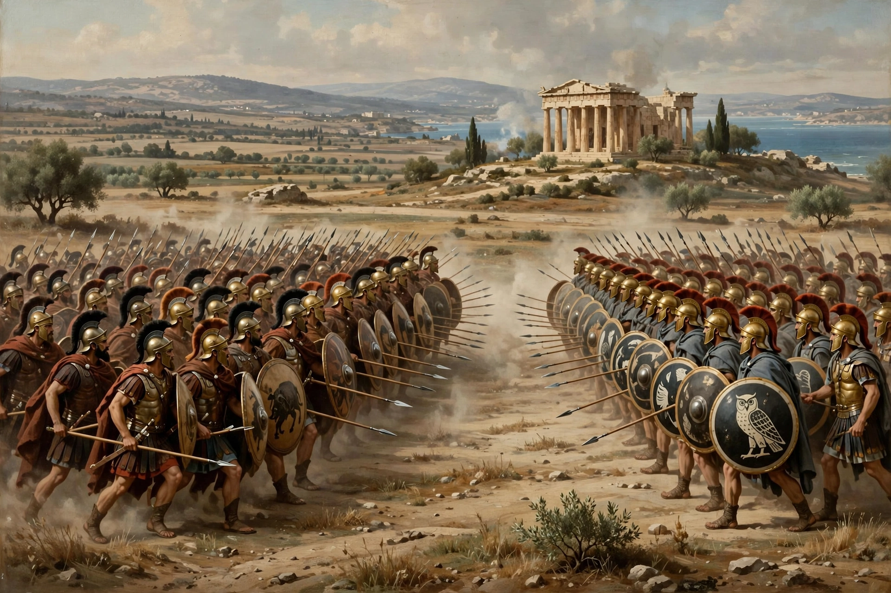

| Battle of Delium | ||
|---|---|---|
| Part of the Peloponnesian War | ||
| Date | 424 BC | |
| Location | Delium, Boeotia (modern Greece) | |
| Result | Boeotian victory | |
| Belligerents | ||
| Athens | Boeotian League (Thebes) | |
| Commanders and leaders | ||
| Hippocrates † | Pagondas | |
| Strength | c. 7,000 hoplites, 1,000 cavalry, plus light troops | |
| Casualties and losses | c. 1,000 killed | c. 500 killed |

The Battle of Delium (or Delion) took place in 424 BC during the Peloponnesian War, between armies of Athens and Boeotia. It is notable for the tactical innovations of the Boeotian commander Pagondas, the use of a primitive flame-thrower in the subsequent siege of the Athenian fort, and the presence of the philosopher Socrates, who fought as a hoplite in the Athenian ranks.
In 424 BC the Athenians planned a coordinated invasion of Boeotia: Demosthenes would land on the western coast while Hippocrates advanced from Attica to fortify Delium, a sanctuary of Apollo near the coast. The two movements fell out of step — Demosthenes' landing failed — and the Boeotians concentrated against Hippocrates alone. Caught while fortifying Delium, the Athenians drew up for battle on the plain nearby.
Pagondas massed his Theban contingent on the right wing to a depth of twenty-five shields, rather than the customary eight or twelve, while the rest of the Boeotian line was formed to about fifteen deep. The Athenians, drawn up uniformly eight deep, initially drove back the Boeotian left, but the deep Theban right broke through and Pagondas sent two squadrons of cavalry around a hill to appear behind the victorious Athenian wing. Mistaking them for a fresh army, the Athenians panicked; the army collapsed into a rout in the gathering dusk. Hippocrates was killed, and around a thousand Athenian hoplites died. Plato's dialogues recall that Socrates and Alcibiades retreated in good order, Socrates' composure saving lives.
The Boeotians besieged the Athenian garrison left at Delium. After seventeen days they stormed the fort using an ingenious device — a hollowed beam fitted with bellows and a cauldron of burning coals, sulphur and pitch, effectively a flame-thrower — which burned the wooden palisade. The defeat ended Athenian ambitions in Boeotia and was a major reverse after the successes at Pylos and Sphacteria.
Thucydides, History of the Peloponnesian War, Book 4; Plato, Laches and Symposium.